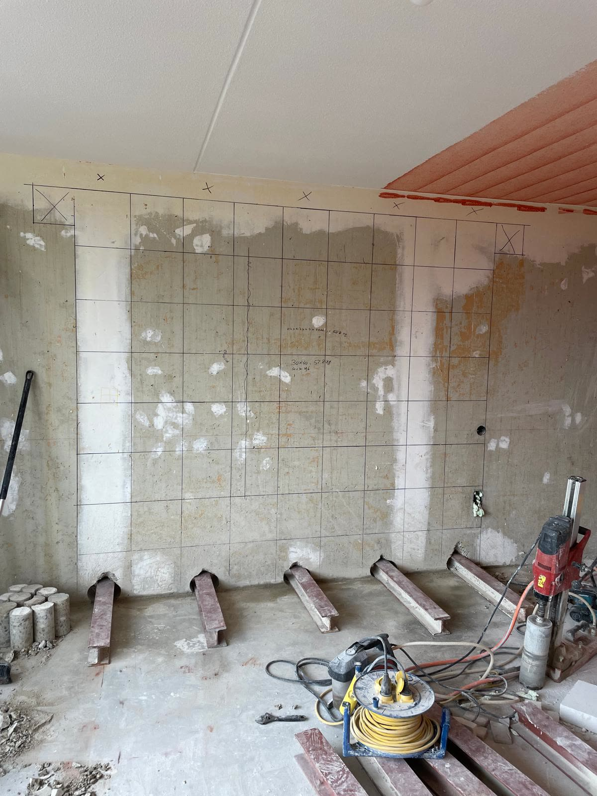
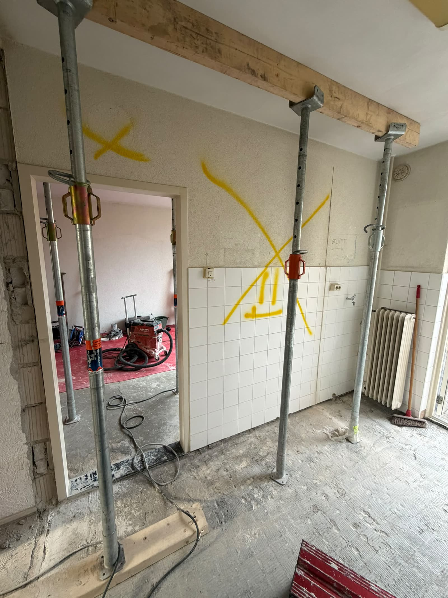
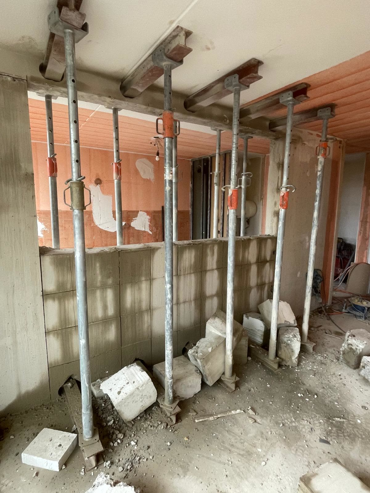
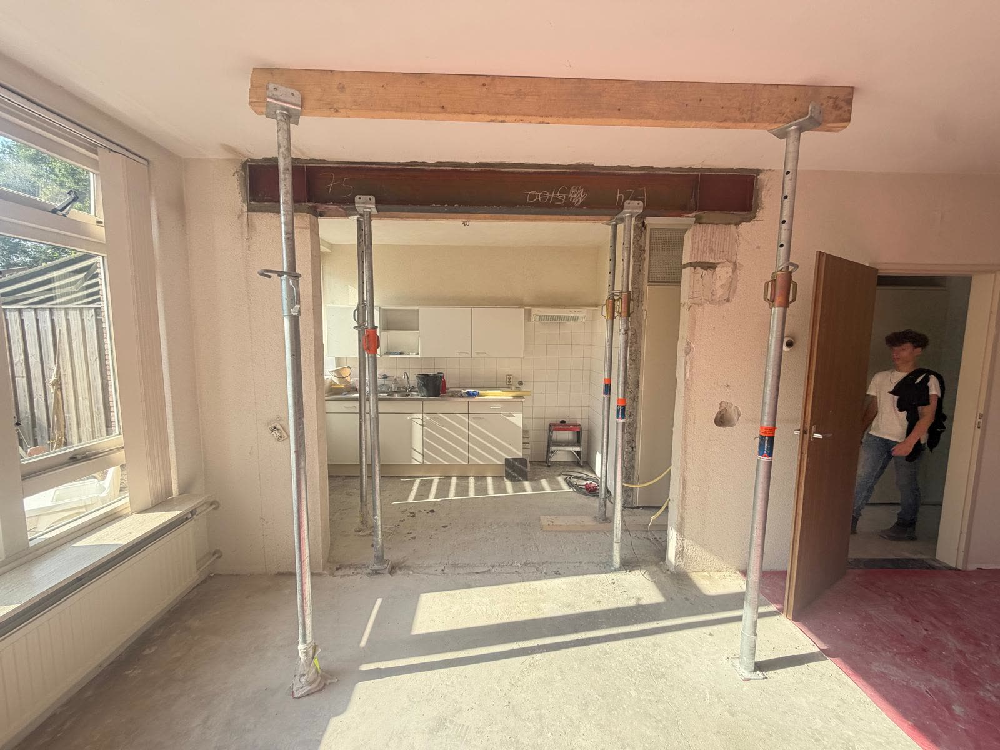

Eerst aftekenen en stempelen
Voordat er gezaagd wordt, staat op de muur wat eruit gaat en wat blijft staan, precies zoals in de berekening. Ook de plek van de ligger en de opleggingen wordt afgetekend. Daarna komt de stempeling, die het gewicht van de vloer erboven overneemt zolang de muur open ligt. Hoe dat gaat, staat bij dragende muur stutten.


Zagen in blokken
De muur gaat er gezaagd uit, met stofafzuiging erbij. Een betonwand wordt in vakken gezaagd, van boven naar beneden, zodat elk blok nog te tillen is. Zo kan de wand in stukken naar buiten zonder dat er een kraan aan te pas komt. In het appartement gingen de blokken door het raam op de ladderlift en zo de container in.


De ligger erin
Als de opening er is, gaat de stalen ligger erin. Aan beide kanten rust hij op het muurwerk dat blijft staan, of op stalen kolommen als er te weinig muur overblijft. De ruimte tussen het staal en het metselwerk erboven wordt stevig aangevuld, zodat de vloer weer op de ligger rust. In Bemmel is dat een IPE 240 over een vrije opening van 2,52 meter, met aan elke kant 350 mm oplegging.


Stempels eruit en afwerken
Is de aanvulling uitgehard, dan draagt het staal en gaan de stempels eruit. Daarna wordt de ligger ingepakt of afgetimmerd, en komen stucwerk en verf eroverheen. Aan het eind zie je niet meer dat er een muur stond.


Hoeveel muur er mag blijven staan
Vaak wil je de opening zo breed mogelijk. Het stuk muur dat naast de opening blijft staan, draagt alleen wel de ligger, en daarmee het gewicht dat eerst over de hele muur verdeeld was. Hoe smal dat stuk mag worden, volgt uit de berekening. In Bemmel bleef er naast de opening een smal penant staan, en de maat daarvan is in de berekening vastgelegd. Dat project staat uitgebreider bij de doorbraak in Bemmel.
Vergunning
Een dragende muur slopen verandert de draagconstructie van je huis, en daarvoor is een omgevingsvergunning nodig. De gemeente wil een tekening en een constructieberekening zien. Wij maken die en dienen de aanvraag voor je in; hoe dat verloopt, staat bij draagmuur doorbreken.